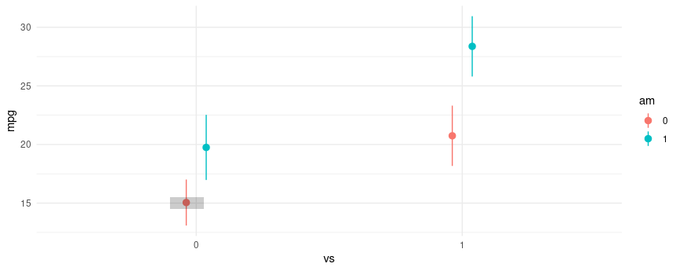
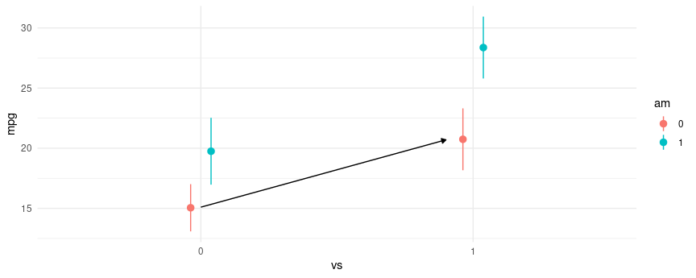
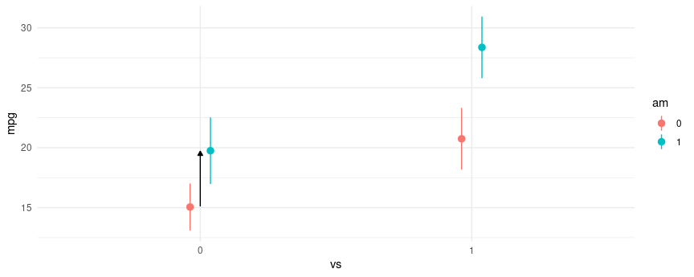
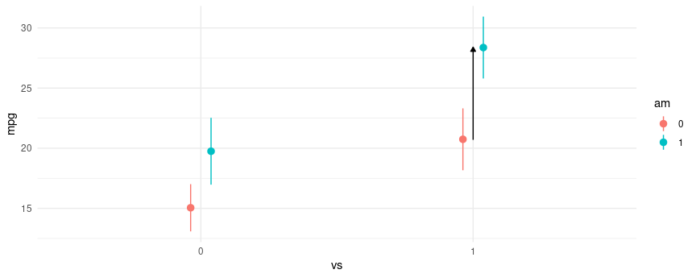
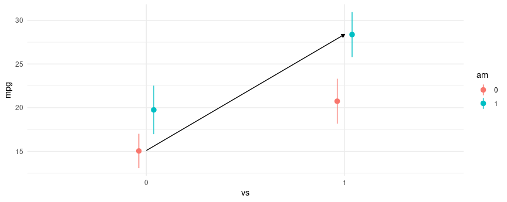

Experiments
2x2 Experiments
A 2×2 factorial design is a type of experimental design that allows researchers to understand the effects of two independent variables (each with two levels) on a single dependent variable. The design is popular among academic researchers as well as in industry when running A/B tests.
In this notebook, we illustrate how to analyze these designs with the
marginaleffects package for R. As we
will see, marginaleffects includes many convenient functions for
analyzing both experimental and observational data, and for plotting our
results.
Fitting a Model
We will use the mtcars dataset. We’ll analyze fuel efficiency, mpg
(miles per gallon), as a function of am (transmission type) and vs
(engine shape).
vs is an indicator variable for if the car has a straight engine (1 =
straight engine, 0 = V-shaped). am is an indicator variable for if the
car has manual transmission (1 = manual transmission, 0=automatic
transmission). There are then four types of cars (1 type for each of the
four combinations of binary indicators).
Let’s start by creating a model for fuel efficiency. For simplicity,
we’ll use linear regression and model the interaction between vs and
am.
library(tidyverse)
library(marginaleffects)
library(modelsummary)
## See ?mtcars for variable definitions
fit <- lm(mpg ~ vs + am + vs:am, data=mtcars) # equivalent to ~ vs*am
We can plot the predictions from the model using the plot_predictions
function. From the plot below, we can see a few things:
- Straight engines (
vs=1) are estimated to have better expected fuel efficiency than V-shaped engines (vs=0). - Manual transmissions (
am=1) are estimated to have better fuel efficiency for both V-shaped and straight engines. - For straight engines, the effect of manual transmissions on fuel efficiency seems to increase.

Evaluating Effects From The Model Summary
Since this model is fairly simple the estimated differences between any
of the four possible combinations of vs and am can be read from the
regression table, which we create using the modelsummary package:
| (1) | |
|---|---|
| (Intercept) | 15.050 |
| (1.002) | |
| vs | 5.693 |
| (1.651) | |
| am | 4.700 |
| (1.736) | |
| vs × am | 2.929 |
| (2.541) | |
| R2 | 0.700 |
| Num.Obs. | 32 |
We can express the same results in the form of a linear equation:
mpg = 15.050 + 5.693 ⋅ vs + 4.700 ⋅ am + 2.929 ⋅ vs ⋅ am.
With a little arithmetic, we can compute estimated differences in fuel efficiency between different groups:
- 4.700 mpg between
am=1andam=0, whenvs=0. - 5.693 mpg between
vs=1andvs=0, whenam=0. - 7.629 mpg between
am=1andam=0, whenvs=1. - 8.621 mpg between
vs=1andvs=0, whenam=1. - 13.322 mpg between a car with
am=1andvs=1, and a car witham=0andvs=0.
Reading off these differences from the model summary is relatively
straightforward in very simple cases like this one. However, it becomes
more difficult as more variables are added to the model, not to mention
obtaining estimated standard errors becomes nightmarish. To make the
process easier, we can leverage the avg_comparisons() function from
the marginaleffects package to compute the appropriate quantities and
standard errors.
Using avg_comparisons To Estimate All Differences
The grey rectangle in the graph below is the estimated fuel efficiency
when vs=0 and am=0, that is, for an automatic transmission car with
V-shaped engine.

Let’s use avg_comparisons to get the difference between straight
engines and V-shaped engines when the car has automatic transmission. In
this call, the variables argument indicates that we want to estimate
the effect of a change of 1 unit in the vs variable. The
newdata=datagrid(am=0) determines the values of the covariates at
which we want to evaluate the contrast.
avg_comparisons(fit,
variables = "vs",
newdata = datagrid(am = 0))
#>
#> Term Contrast Estimate Std. Error z Pr(>|z|) S 2.5 % 97.5 %
#> vs 1 - 0 5.69 1.65 3.45 <0.001 10.8 2.46 8.93
#>
#> Columns: rowid, term, contrast, estimate, std.error, statistic, p.value, s.value, conf.low, conf.high, predicted_lo, predicted_hi, predicted
#> Type: response
As expected, the results produced by avg_comparisons() are exactly the
same as those which we read from the model summary table. The contrast
that we just computed corresponds to the change illustrasted by the
arrow in this plot:

The next difference that we compute is between manual transmissions and
automatic transmissions when the car has a V-shaped engine. Again, the
call to avg_comparisons is shown below, and the corresponding contrast
is indicated in the plot below using an arrow.
avg_comparisons(fit,
variables = "am",
newdata = datagrid(vs = 0))
#>
#> Term Contrast Estimate Std. Error z Pr(>|z|) S 2.5 % 97.5 %
#> am 1 - 0 4.7 1.74 2.71 0.00678 7.2 1.3 8.1
#>
#> Columns: rowid, term, contrast, estimate, std.error, statistic, p.value, s.value, conf.low, conf.high, predicted_lo, predicted_hi, predicted
#> Type: response

The third difference we estimated was between manual transmissions and automatic transmissions when the car has a straight engine. The model call and contrast are:
avg_comparisons(fit,
variables = "am",
newdata = datagrid(vs = 1))
#>
#> Term Contrast Estimate Std. Error z Pr(>|z|) S 2.5 % 97.5 %
#> am 1 - 0 7.63 1.86 4.11 <0.001 14.6 3.99 11.3
#>
#> Columns: rowid, term, contrast, estimate, std.error, statistic, p.value, s.value, conf.low, conf.high, predicted_lo, predicted_hi, predicted
#> Type: response

The last difference and contrast between manual transmissions with
straight engines and automatic transmissions with V-shaped engines. We
call this a “cross-contrast” because we are measuring the difference
between two groups that differ on two explanatory variables at the same
time. To compute this contrast, we use the cross argument of
avg_comparisons:
avg_comparisons(fit,
variables = c("am", "vs"),
cross = TRUE)
#>
#> Estimate Std. Error z Pr(>|z|) S 2.5 % 97.5 % C: am C: vs
#> 13.3 1.65 8.07 <0.001 50.3 10.1 16.6 1 - 0 1 - 0
#>
#> Columns: term, contrast_am, contrast_vs, estimate, std.error, statistic, p.value, s.value, conf.low, conf.high
#> Type: response

Conclusion
The 2x2 design is a very popular design, and when using a linear model,
the estimated differences between groups can be directly read off from
the model summary, if not with a little arithmetic. However, when using
models with a non-identity link function, or when seeking to obtain the
standard errors for estimated differences, things become considerably
more difficult. This vignette showed how to use avg_comparisons to
specify contrasts of interests and obtain standard errors for those
differences. The approach used applies to all generalized linear models
and effects can be further stratified using the by argument (although
this is not shown in this vignette.)
Regression adjustment
Many analysts who conduct and analyze experiments wish to use regression adjustment with a linear regression model to improve the precision of their estimate of the treatment effect. Unfortunately, regression adjustment can introduce small-sample bias and other undesirable properties (Freedman 2008). Lin (2013) proposes a simple strategy to fix these problems in sufficiently large samples:
- Center all predictors by subtracting each of their means.
- Estimate a linear model in which the treatment is interacted with each of the covariates.
The estimatr package includes a convenient function to implement this
strategy:
library(estimatr)
library(marginaleffects)
lalonde <- read.csv("https://vincentarelbundock.github.io/Rdatasets/csv/MatchIt/lalonde.csv")
mod <- lm_lin(
re78 ~ treat,
covariates = ~ age + educ + race,
data = lalonde,
se_type = "HC3")
summary(mod)
#>
#> Call:
#> lm_lin(formula = re78 ~ treat, covariates = ~age + educ + race,
#> data = lalonde, se_type = "HC3")
#>
#> Standard error type: HC3
#>
#> Coefficients:
#> Estimate Std. Error t value Pr(>|t|) CI Lower CI Upper DF
#> (Intercept) 6488.05 356.71 18.1885 2.809e-59 5787.50 7188.6 604
#> treat 489.73 878.52 0.5574 5.774e-01 -1235.59 2215.0 604
#> age_c 85.88 35.42 2.4248 1.561e-02 16.32 155.4 604
#> educ_c 464.04 131.51 3.5286 4.495e-04 205.77 722.3 604
#> racehispan_c 2775.47 1155.40 2.4022 1.660e-02 506.38 5044.6 604
#> racewhite_c 2291.67 793.30 2.8888 4.006e-03 733.71 3849.6 604
#> treat:age_c 17.23 76.37 0.2256 8.216e-01 -132.75 167.2 604
#> treat:educ_c 226.71 308.43 0.7350 4.626e-01 -379.02 832.4 604
#> treat:racehispan_c -1057.84 2652.42 -0.3988 6.902e-01 -6266.92 4151.2 604
#> treat:racewhite_c -1205.68 1805.21 -0.6679 5.045e-01 -4750.92 2339.6 604
#>
#> Multiple R-squared: 0.05722 , Adjusted R-squared: 0.04317
#> F-statistic: 4.238 on 9 and 604 DF, p-value: 2.424e-05
We can obtain the same results by fitting a model with the standard lm
function and using the comparisons() function:
mod <- lm(re78 ~ treat * (age + educ + race), data = lalonde)
avg_comparisons(
mod,
variables = "treat",
vcov = "HC3")
#>
#> Term Contrast Estimate Std. Error z Pr(>|z|) S 2.5 % 97.5 %
#> treat 1 - 0 490 879 0.557 0.577 0.8 -1232 2212
#>
#> Columns: term, contrast, estimate, std.error, statistic, p.value, s.value, conf.low, conf.high
#> Type: response
Notice that the treat coefficient and associate standard error in the
lm_lin regression are exactly the same as the estimates produced by
the comparisons() function.
References
- Freedman, David A. “On Regression Adjustments to Experimental Data.” Advances in Applied Mathematics 40, no. 2 (February 2008): 180–93.
- Lin, Winston. “Agnostic Notes on Regression Adjustments to Experimental Data: Reexamining Freedman’s Critique.” Annals of Applied Statistics 7, no. 1 (March 2013): 295–318. https://doi.org/10.1214/12-AOAS583.